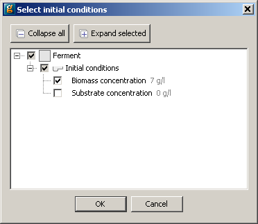

In order to define the Process entity to use for a given experiment, click on the General tab in the Experiments to be designed entity editor and then choose the desired Process from the drop down menu at the top of the window as shown in the figure below.
gPROMS can be used to design both steady-state and dynamic experiments. If designing a dynamic experiment then you need to decide whether to optimally determine the duration of the experiment and the initial conditions for the experiment:
Fixed experiment duration
Provide the value of the duration in the Initial guess field
Optimise experiment duration:
Provide an initial guess and lower and upper bounds for the duration of the experiment - gPROMS will determine an experiment duration between these bounds
Initial conditions
Use the Select... button to populate the table using a dialog-based choice which will only display variables that the model developer has chosen to be suitable for initial conditions. See the section on dialog-based variable choice in Model Validation.

Alternatively, type the full pathname of the gPROMS differential variable that you wish to specify an initial condition for in the <new> cell in the initial conditions table. You MUST only provide initial conditions for variables that are given initial values directly in the Process.
If you do not wish to type the pathname you can select the appropriate variable from a drop down list by holding the CTRL key down and hitting the SPACE button on your keyboard. The first time you do this, gPROMS will give you a list of relevant Units and Variables. Select the desired one and then repeat as necessary to drill down to the desired Variable.
The full pathname may be converted to a descriptive name in case the model interface has been configured accordingly. Depending on the chosen application preferences, it may not be possible to edit the table directly.
Give the initial guess and lower and upper bounds for the initial condition - gPROMS will determine the value of the initial condition between these bounds. If you want to fix the initial condition at a constant value then check the fixed box.